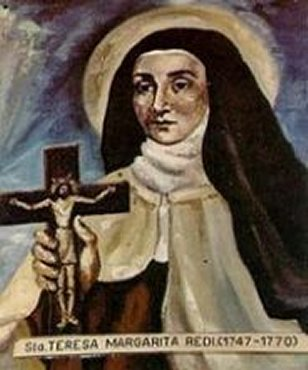
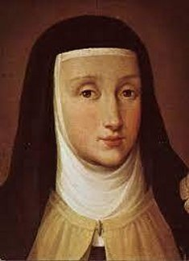
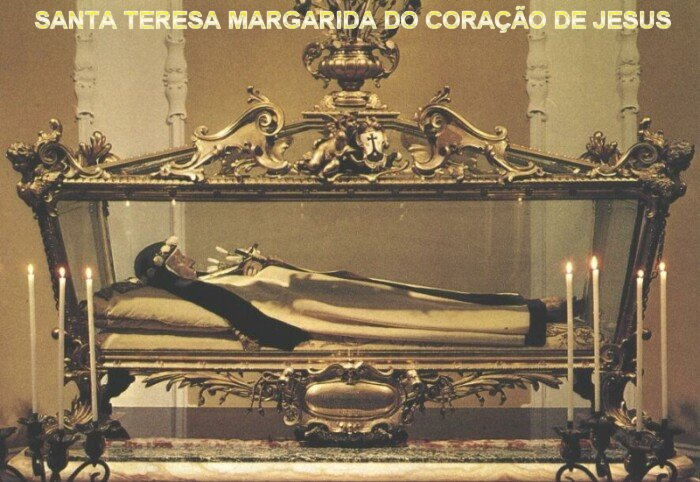

“ELA REALIZOU
O SEU
DESEJO”
VIDA DE AMOR
A Irmã Teresa Margarida se
comprazia em olhar CRISTO como modelo especial à sua vida. Mas se até agora ela
O havia considerado na sua vida exterior, agora é
na vida interior,
na vida oculta da Alma de JESUS que ela buscava olhar. E vê então, que é uma vida
de intenso amor, que inclusive O impeliu ao sacrifício da Cruz para a gloria do
Eterno PAI e salvação da humanidade de todas as gerações. E é exatamente desta
vida de amor forte e dedicado que ela quer participar:
E disse:
“Sim, meu querido DEUS, não mais
almejar que ser uma perfeita imitadora VOSSA, e se VOSSA Vida foi uma Vida
Oculta, de humilhação, amor e sacrifício, assim há de ser a minha, desde agora.
Portanto, para sempre hei de me encerrar em VOSSO Amabilíssimo CORAÇÃO, como num
deserto, para em VÓS, CONVOSCO e por VÓS, levar uma vida oculta de amor e
sacrifício”.
Frei Ildefonso observa que o
martírio da Irmã Teresa Margarida abrange, sobretudo, os seus últimos dois anos
de vida, exatamente os anos em que ela sobreviveu a sua oferta amorosa; DEUS
leva a sério as palavras dos que têm boa vontade, são sinceros e são aplicados.
Ainda disse Frei Ildefonso, que
a Irmã Teresa sofria espiritualmente aos extremos de sofrimento, só em pensar
nos pecados que eram cometidos. E principalmente, naqueles últimos meses da sua
vida em que o martírio de amor a estabelecia na suprema pureza de coração. De
fato, sua vida se tornara uma incessante oblação. Ela mesma escreveu a uma de
suas companheiras de Mosteiro:
“Ó meu JESUS, VÓS estais crucificado por mim e eu por VÓS”.
A CARIDADE ERA
SUA VIDA

As Irmãs
que eram suas companheiras perceberam que aquele imenso esforço desprendido pela Irmã
Teresa Margarida, no trabalho e nos sacrifícios no meio das dificuldades que ocorriam,
estava sendo um fardo extremamente pesado e que ela não conseguiria resistir por
muito tempo. Outros motivos levaram Frei Ildefonso às mesmas conclusões, porque
ele conhecia a alma dela e bem sabia que a implacável chama do Amor Divino, a
conduzia a desejar a eternidade. Entretanto, iluminada pelo ESPÍRITO SANTO, a
Irmã Teresa também compreendia que somente no Céu poderia alcançar um amor sem
os limites da matéria, em plenitude por toda eternidade como nunca seria
possível nesta vida. Como já mencionamos, o maior preceito da Caridade é:
“Amarás o SENHOR SEU DEUS de todo
o seu coração, de toda a sua alma, com todas as suas forças e com todo o seu
espírito”. (Lc 10, 27)
Outros motivos levaram
Frei Ildefonso (Diretor Espiritual do Mosteiro) às mesmas conclusões. Ele já conhecia
intimamente a alma da Irmã Teresa Margarida, e assim, podia penetrar no raciocínio muito
além das aparências exteriores. E com certeza ela pensava consigo: “Nada é demais para se adquirir o Verdadeiro Amor”;
este pensamento a estimulava
a procurar o “Amor Sólido e
Atuante”, (afirmava o
Frei Ildefonso), sem lhe permitir
o menor olhar dirigido a si mesma, a sua pobre alma atormentada e a seu frágil corpo
desgastado pelo trabalho. A Irmã Mestra e também a experiente Irmã Teresa Maria
Ricasoli se referia a esse esforço praticado pela Irmã Teresa Margarida, considerando
excessivo para a saúde dela, inclusive afirmando textualmente:
“A Serva de DEUS
não pode continuar naquele estado, sem morrer ou perder a saúde, pois a jovem Irmã
Teresa Margarida aparentemente não tem a resistência física para tanto esforço”.
E verdadeiramente, a Irmã
Margarida sabia dessa realidade... Sabia que ela só poderia atender ao preceito
Divino: “Amarás o SENHOR
TEU DEUS de todo o teu coração, de toda a tua alma, com todas as tuas forças e
com todo o teu espírito”,
no dia em que ela alcançasse o Céu, onde conseguirá a sua plena e absoluta doação
a DEUS. Estado em que a sua alma estará concentrada inteiramente no SENHOR DEUS,
dando-LHE o supremo amor e a maior gloria. E assim, diante da realidade atual,
a Irmã Teresa Margarida sente que existe uma espécie de “tela” separando a
união da sua alma e do seu corpo, que lhe impede de alcançar o estado de absoluta
doação a DEUS. E por essa razão, de sua alma se elevava espontaneamente uma
angustiosa invocação ao ESPÍRITO SANTO: “Rompe la "tela” deste dulce encuentro”. (“Rompe a “tela” para que aconteça o definitivo encontro”).
MORTE DA IRMÃ TERESA
MARGARIDA
Desse modo, é fácil
compreender que a Irmã Teresa Margarida não tinha medo da morte. Em todas as oportunidades
ela se manifestava ao Frei Ildefonso, que confirma a palavra da Irmã:
“As angústias mortais que ela sentia
continuamente e se manifestava, dizia que não podia mais viver sem amar a DEUS
como ela desejava, e que para ela, a morte seria um alívio”.
Assim, com a mesma
condição e sob a mesma obediência, a Santa rogava a DEUS também a graça de morrer como
enfermeira: o amor de DEUS e o amor ao próximo, unidos na mesma chama de
caridade que a consumia, refletiam-se igualmente em seu desejo de libertação
eterna.
Em meados de Fevereiro
ela escreve a seu pai a última carta, com o símbolo do CORAÇÃO DE JESUS, suplicando
que ele fizesse uma Novena ao SAGRADO CORAÇÃO DE JESUS em benefício de uma causa
muito urgente (mas não explicou de que se tratava). No domingo 4 de Março de
1770, solicitou ao Frei Ildefonso o desejo de fazer uma Confissão, como se fosse
a última da sua vida. O religioso conhecendo bem a Irmã Teresa Margarida,
concordou. No dia 6 de Março a Irmã estava fazendo a ronda das enfermas. Estavam
na Quaresma, à comunidade já havia almoçado. Ela foi até o refeitório para o seu
pequeno jantar. Mal começou, sentiu uma terrível cólica, com tanta violência que
ela abandonou o refeitório às pressas. Com dificuldade arrastou-se até a sua
cela... As dores eram tão profundas que mal podia caminhar. Gritou chamando a
Irmã Maria Vitória que passava por ali. Ela veio e lhe ajudou a deitar. Outras
Irmãs acodem e chamam o médico. Ela agradeceu a todas, e apenas pediu-lhes que
rezassem cinco vezes: “Gloria
ao PAI, ao FILHO e ao ESPÍRITO SANTO”. O médico chegou e depois de consultá-la disse: “Não é nada grave”, e receitou umas gotas. A Irmã, todavia, continuava sofrendo terrivelmente. Ela
não conseguiu segurar a sua voz e gritou. Mas ao invés de pedir socorro, implorou a DEUS:
“Meu JESUS, eu VOS ofereço. SENHOR
me dá paciência maior para poder sofrer ainda mais por VÓS”. O médico atendendo ao novo chamado voltou e realizou procedimentos
com sangria. A Irmã sentia muitas dores, fechou os olhos e permaneceu em silêncio.
E assim, ela se
manteve por um longo tempo com dores insuportáveis. Com um crucifixo nas mãos, continuava
rezando para JESUS e NOSSA SENHORA. As Irmãs que ajudavam permaneciam na sua cela, mas
polidamente Irmã Teresa só agradecia. Foi lhe administrado os Santos Sacramentos.
Então com o agravamento da situação, as Irmãs foram estar com a Priora e deram as
reais noticias da Irmã Teresa Margarida. A Priora solicitou orações urgentes a todos
os Mosteiros. O Confessor veio e lhe deu a absolvição “in articulo mortis”. As Irmãs presenciaram que neste momento a Irmã Teresa
Margarida fechou suavemente os olhos e sua alma voou para o Céu. Eram três horas
da tarde do dia 7 de Março de 1770. E assim, a Irmã Teresa Margarida morreu em
pleno silêncio. Foi à última e admirável vitória daquele verdadeiro incêndio de
amor a DEUS, que consumiu a sua existência.
DEUS A COLOCOU
NA GLÓRIA
 A
condição do corpo da Irmã Teresa Margarida não era boa, com tal aspecto que as
freiras receavam que a deteriorização chegasse antes que os rituais fúnebres
pudessem ser realizados. Seu rosto estava descolorido, suas extremidades eram
negras, o corpo já bem inchado e rígido. Completamente ao contrário de como ela
realmente era. E assim, o seu corpo foi preparado e exposto no coro no final do
dia, mas na verdade era quase irreconhecível para as irmãs que viveram com ela
nos últimos cinco anos.
A
condição do corpo da Irmã Teresa Margarida não era boa, com tal aspecto que as
freiras receavam que a deteriorização chegasse antes que os rituais fúnebres
pudessem ser realizados. Seu rosto estava descolorido, suas extremidades eram
negras, o corpo já bem inchado e rígido. Completamente ao contrário de como ela
realmente era. E assim, o seu corpo foi preparado e exposto no coro no final do
dia, mas na verdade era quase irreconhecível para as irmãs que viveram com ela
nos últimos cinco anos.
O seu funeral foi
realizado no dia seguinte e os planos foram elaborados, em face da deteriorização,
para fazer o sepultamento imediatamente. Todavia, quando ela foi transferida para
o cofre, todos perceberam que havia ocorrido uma mudança extraordinária no corpo.
A descoloração azul-escura do seu rosto era quase imperceptível. Então a comunidade
decidiu adiar o enterro. Poucas horas depois, num segundo exame o corpo da Irmã
apresentou uma recuperação impressionante, voltando a sua cor natural. A noticia
se espalhou ligeira e as Freiras ficaram ansiosas para ver a face da Irmã Teresa
Margarida. Então tiveram a maravilhosa surpresa de ver a Irmã exatamente como
elas a conheciam. Elas então suplicaram ao Provincial a permissão para que a
Irmã Teresa fosse sepultada no dia seguinte, pedido que logo foi concedido pelo
Senhor Provincial, em virtude da espantosa reversão dos processos naturais.
Aconteceu de fato um fenômeno milagroso. Então, o enterro foi organizado para
ser na noite do dia 9 de março, ou seja, cinquenta e duas horas depois de
ocorrida a morte. E a tonalidade da pele da Irmã era tão natural como quando ela
estava viva e com plena saúde. Anteriormente, seus membros estavam tão rígidos,
que no momento de lhe vestirem o hábito, foi uma tarefa terrivelmente difícil.
Agora, por milagre Divino, os membros estavam flexíveis, macios como de uma
pessoa viva, e o corpo podia ser movido com facilidade.


Isso tudo foi
tão sem precedentes que o caixão foi autorizado a permanecer aberto. As freiras,
o Provincial, vários padres e médicos viram e testemunharam que o corpo era tão
natural como se ela estivesse dormindo, e não havia a menor evidência visível de
qualquer corrupção ou decadência. Seu rosto apresentava uma aparência saudável e
inclusive, havia cor nas bochechas. Madre Vitória, que havia recebido a
profissão desta jovem freira, sugeriu que um retrato fosse pintado antes do
eventual enterro. Isso foi unanimemente aceito, e Anna Piattoli, pintora de
retratos de Florença, foi levada para a cripta a fim de capturar para sempre as
características que agora na morte pareciam totalmente realistas. Foi uma
magnífica lembrança de DEUS, para os amigos e parentes da Irmã Teresa Margarida.
No momento em que a pintura foi concluída, uma suave e magnífica fragrância foi
detectada sobre a cripta. As flores que ainda permaneciam ao lado do esquife,
murcharam, mas a fragrância persistiu e impregnou toda a câmara. E
também, a quilômetros de distância, em Arezzo, sua mãe também sentiu um perfume
delicioso que surgiu em certas partes da residência.
Durante as duas
semanas seguintes, vários médicos e autoridades eclesiásticas chegaram à cripta
para examinar o corpo. À medida que os dias continuavam a passar, o corpo
recuperava cada vez mais as características de um ser vivo. O arcebispo de
Florença chegou em 21 de março para fazer seu próprio exame. O corpo agora era
totalmente sutil. Seus brilhantes olhos azuis podiam ser vistos sob as pálpebras
ligeiramente abertas. Finalmente, um pouco de umidade se acumulou em seu lábio
superior. Foi removido com um lenço e rendeu uma “fragrância celestial”. O Arcebispo declarou: “Extraordinário! De fato, é um milagre ver um corpo
completamente flexível após a morte, os olhos de uma pessoa viva. Por que, até
as solas dos pés dela parecem tão reais como se ela tivesse caminhado uns minutos
atrás. Ela parece estar dormindo. Não há cheiro de decadência, mas pelo contrário
uma fragrância muito deliciosa. De fato, é o odor da santidade”.
A Irmã Teresa Margarida
foi finalmente sepultada dezoito dias após a sua morte. O relato de milagres
atribuídos à sua intercessão começou imediatamente. Trinta e cinco anos depois,
em 21 de junho de 1805, na festa do Sagrado Coração, o corpo incorrupto de Santa
Teresa Margarida foi transferido para o coro das freiras no Carmelo de Florença,
onde permanece até hoje.
 BEATIFICAÇÃO E CANONIZAÇÃO
BEATIFICAÇÃO E CANONIZAÇÃO
O início do Processo
Ordinário ocorreu no dia 10 de Julho de 1773. Anos após, iniciou o Processo Canônico Apostólico
no dia 6 de Setembro de 1817. Nesta oportunidade, o Papa Gregório XVI
a declarou “VENERÁVEL”
no dia 14 de Abril de 1839. O processo
continuou seu ritmo normal para a Beatificação. O Papa Pio XI a “BEATIFICOU” no dia 9 de Junho de 1929. E cinco anos após, no dia 19 de Março
de 1934 o Papa Pio XI a “CANONIZOU”,
e nas suas palavras no Vaticano ele definiu
a SANTA IRMÃ TERESA MARGARIDA
, como a “jovem flor do Carmelo, a imitar a brancura das açucenas”.


 - PRÓXIMA
PÁGINA
- PRÓXIMA
PÁGINA
- PÁGINA
ANTERIOR
- RETORNA
AO ÍNDICE